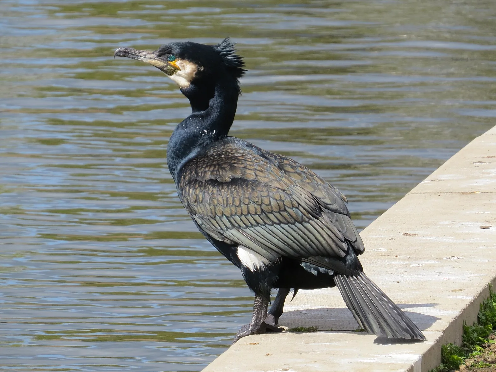

Back to the indexNO. 038 · Coast & Tidal Flats / Phalacrocoracidae · Cormorants
Great Cormorant
普通鸬鹚 · pǔ tōng lú cí Phalacrocorax carboThe fisherman that has to dry its wings after every dive
Glossy black all over, a hooked bill, and eyes of emerald green. Its feathers are not waterproof, so after every dive it has to stand on a rock and hold its wings out to dry for a long while — a pose like embracing the sun.
Gallery
One scientific illustration for shape and colour blocks, two field photographs for how it looks in real light. Click any image to enlarge.
Identification
- PlumageBlackish-brown with a blue-green gloss; in breeding condition white filoplumes on the head and neck and a white patch on the flank.
- FaceBare facial skin yellowish-white and gular pouch yellow, giving an unmistakable 'yellow face'.
- EyeIris emerald green, conspicuous against the black head.
- BillGrey-black, long and laterally compressed, with a pronounced downward hook at the tip for holding slippery fish.
Behaviour
An outstanding diver, able to descend several metres and stay under for more than a minute while chasing fish. Because the plumage carries little oil and so gives little buoyancy — an advantage when diving — it must dry its wings after feeding. It often roosts in parties on dead waterside trees, rocks or power poles. A winter visitor in South China, common in bays and reservoirs.
Voice
Silent most of the time; low grunts and snoring notes around the colony, rarely heard on the wintering grounds.
Where to find it in Zhuhai
- Jinwan bays
- Qianwu Reservoir
- Hengqin estuary
- Qi'ao Island waterways